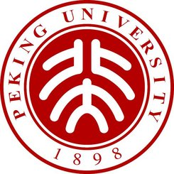
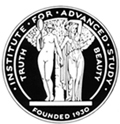

Zheng Zheng - Curriculum Vitae
PDF version
Research Interests
-
Cosmology, large-scale structure, and galaxy clustering
-
Galaxy formation and evolution, Lyman-alpha emitting galaxies
-
Radiative transfer of Lyman-alpha photons and applications in astrophysics
-
Gravitational lensing
-
Broad research interests in other fields of astrophysics
Education

-
Ph.D., 2004, Department of Astronomy, The Ohio State University
-
M.S., 1999, Beijing Astronomical Observatory, Chinese Academy of Sciences,
Beijing, China
-
B.S., 1996, Department of Geophysics, Peking University, Beijing, China
Experience

-
Associate Chair, Department of Physics & Astronomy, University of Utah, 2023 -
-
Professor, Department of Physics & Astronomy, University of Utah, 2021 -
-
Associate Professor, Department of Physics & Astronomy, University of Utah, 2015 - 2021
-
Assistant Professor, Department of Physics & Astronomy, University of Utah, 2011 - 2015
-
YCAA Prize Fellow, Yale University, 2009 - 2011
-
Long-Term Member / John N. Bahcall Fellow, Institute for Advanced Study, Princeton, 2008 - 2009
-
Member / Hubble Fellow, Institute for Advanced Study, Princeton, 2004 - 2007
Honors and Awards
-
YCAA Prize Fellowship, Yale University, 2009 - 2011
-
John N. Bahcall Fellowship, Institute for Advanced Study (IAS), Princeton, 2008 - 2009
-
Hubble Fellowship (STScI, NASA), Institute for Advanced Study (IAS), Princeton, 2004-2007
-
Presidential Fellowship, Ohio State University, 2003
-
Presidential Fellowship, Chinese Academy of Sciences, 1999
-
Liu Yongling Scholarship, Chinese Academy of Sciences, 1999
-
Honor Graduate, Peking University, 1996
-
Baogang Scholarship for Excellent Student, Peking University, 1995
Miscellaneous
-
Referee for ApJ, ApJL, MNRAS, A&A, New Astronomy, Research in Astronomy and Astrophysics, ApSS, JCAP, JKAS, and SCPMA
-
NSF and NASA Proposal Reviewer
-
Member of the American Astronomical Society
-
LAMOST-PLUS Collaboration member (2008 - current)
-
SDSS Collaboration Council member (Institute for Advanced Study representative, 2006-2008)
-
SDSS-III Collaboration Council member (University of Utah representative, 2013 -2015)
-
SOC Co-chair of the international workshop "Halo and Galaxy Assembly Bias - from Theory to Observation" (June, 2019)
-
SOC Co-chair of the international conference "Studying the Universe with GAlaxy suRveys: Revealing the Unlimited in ShangHai (SUGAR-RUSH)" (June, 2018)
-
SOC Co-chair of the 2018 Tokyo Spring Cosmic Lyman-alpha Workshop (Sakura CLAW) (March, 2018)
-
SOC and LOC chair of SnowPAC 2017 "The Snowbird Cosmic Lyman-Alpha Workshop (SnowCLAW)" (March, 2017)
-
Co-chair of SDSS-IV eBOSS Galaxy Science Working Group (2013 - 2015)
-
Co-chair of SnowPAC 2012 workshop on "Gravitational Lensing in the Age of
Survey Science" (Snowbird, UT, March 2012)
-
Initiator and Co-organizer of AstroCoffee Discussion at the University of Utah (2011 -); now at benty-fields
-
Co-organizer of
CCAPP workshop on Lyman-alpha Emitters (April, 2010)
-
Co-organizer of Astro-Lunch Discussion at Yale University (2009 - )
-
Co-organizer of Cosmology Seminar at Yale University (2010 - )
-
Co-organizer of Astrophysics Colloquium at the Institute for Advanced Study (Fall 2007, Spring 2008)
-
Co-organizer of Astrophysics Seminar Series at the Institute for Advanced Study (2006)
-
Co-organizer of Princeton-IAS Postdoc Astrophysics Seminars (Fall 2007)
Copyright © 2009 Zheng Zheng.